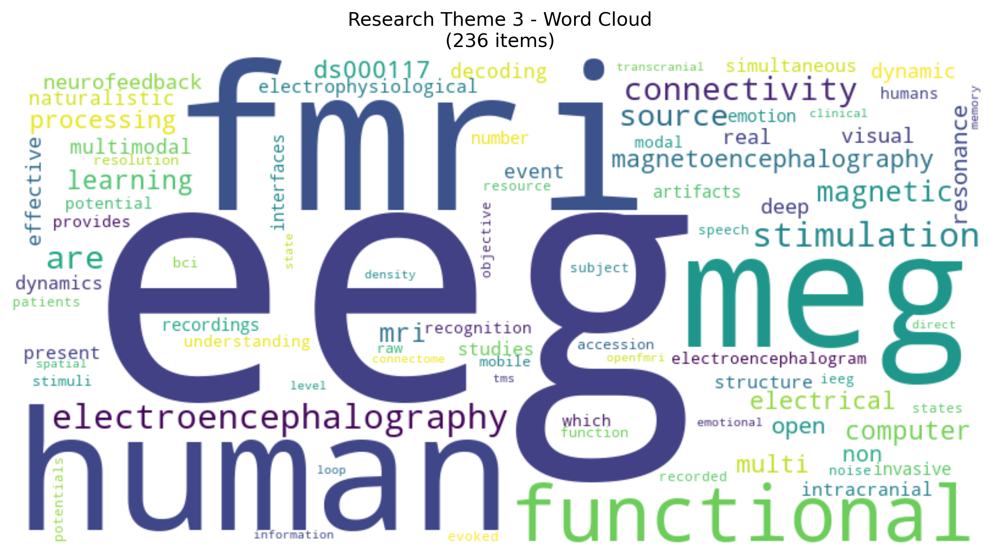

Citation Quality
Growth Timeline
Research Bridge Analysis
Network Analysis
Interactive network visualizations showing relationships between datasets and citations. Hover over nodes to see detailed information. (First-time loading may take a few seconds)
Dataset Map
Datasets positioned using semantic coordinates, sized by citation countCitation Map
Citations positioned using semantic coordinates, connected by embedding similarity.
Network Visualization Insights:
Dataset proximity reflects semantic similarity through content analysis. Node size indicates citation volume.
Citation proximity shows research theme clustering with connections representing embedding similarity.
Citation node size reflects paper impact (citation count).
Research Theme Analysis
Word clouds showing key terms for each research theme cluster identified through UMAP analysis. Larger terms indicate higher frequency and importance within the theme.
Theme 1 - Core EEG
Primary neuroscience datasets
Theme 2 - Audio & Stimulation
Auditory processing studies
Theme 3 - Task Performance
Cognitive and behavioral tasks
Theme 4 - Advanced Methods
Methodological and analytical approaches